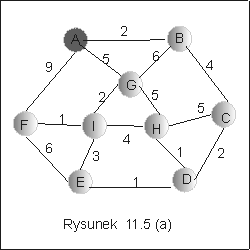
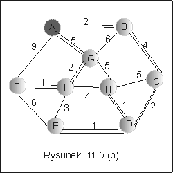

| « poprzedni punkt | nastêpny punkt » |
Algorytm Dijkstry rozwi±zuje problem II, znalezienia najkrótszych
¶cie¿ek ze ¼ród³a do wszystkich innych wierzcho³ku grafu, stosuj±c
metodê zach³ann±. Zak³ada siê, ¿e graf jest zorientowany i ¿e funkcja
kosztu przypisuje krawêdziom liczby nieujemne. Przyjmiemy te¿, ¿e
wierzcho³ki s± ponumerowane liczbami naturalnymi od 1 do n, a graf G =
Idea algorytmu
W kolejnych etapach algorytmu zbiór wierzcho³ków osi±galnych ze ¼ród³a s jest powiêkszany sukcesywnie, o wierzcho³ki incydentne z ostatnio do³±czonymi wierzcho³kami. Zawsze staramy siê do³±czaæ te wierzcho³ki, których osi±gniêcie wymaga najmniejszego kosztu, które znajduj± siê najbli¿ej ¼ród³a.
Strukrura danych, u¿yta w przedstawionej tu implementacji algorytmu Dijkstry, jest bardzo prosta. D³ugo¶ci najkrótszych ¶cie¿ek bêdziemy pamiêtali w tablicy d o n pozycjach (n odpowiada liczbie wierzcho³ków grafu). Ponadto w tablicy P bêdziemy zapisywali poprzedniki wierzcho³ków na najkrótszej ¶cie¿ce ze ¼ród³a.
Wierzcho³ki grafu podzielimy na trzy grupy:
S1 - zbiór wierzcho³ków osi±galnych ze ¼ród³a s, dla kórych ju¿
znaleziono najkrótsz± ¶cie¿kê,
S2 - zbiór wierzcho³ków, s±siaduj±cych z wierzcho³kami S1, tzn. S2={y:
istnieje x w zbiorze S1, ¿e (x,y) nale¿y do E}. S2 jest wiêc zbiorem wierzcho³ków,
dla których znamy droge ze ¼ród³a, ale nie wiemy jeszcze, czy jest to droga najkrótsza.
S3 - zbiór pozosta³ych wierzcho³ków, S3 = (V\S1)\S2.
Algorytm
| DijkstraSP(G : graf){ | |
|
| x := s; | //zaczynamy od zród³a | |
| while niepusty(S3) do | ||
| for y takich, ¿e (x,y) nale¿y do E do | |
|
| case y w S2 | ||
| if d[x] +c(x,y) < d[y] then | // wybieramy krótsz± drogê do y | |
| p[y] := x; d[y] := d[x] + c(x,y); | |
|
| fi | |
|
| case y w S3 | //odleg³osæ od s nie jest ustalona | |
| S3 := S3\{y}; S2:=S2 + {y}; | |
|
| p[y] := x; d[y] := d[x] + c(x,y); | |
|
| od; | |
|
| |
x := min(S2); | // wybierz wierzcho³ek z S2 z minimaln± warto¶ci± d(z) |
| od | ||
| } | ||
Koszt
Pêtla "while" wykonuje siê n razy, tyle ile jest elementów w zbiorze wierzcho³ków grafu. Pêtla "for" ma tak± d³ugo¶æ jak lista incydencji wierzcho³ka x. Mo¿e wiêc mieæ n elementów w najgorszym przypadku. Wybór elementu minimalnego (ze wzglêdu na warto¶æ d w zbiorze S2) kosztuje w najgorszym przypadku O(n). Ostatecznie, koszt algorytmu mo¿na oszacowaæ z góry przez O(n2).Przyk³ad 5.1
Rozwa¿my graf na rysunku 11.5(a). Za³ó¿my, ¿e wierzcho³ki zosta³y ponumerowne zgodnie z porz±dkiem alfabetycznym i niech zród³em bêdzie wierzcho³ek A. Kolejne zmiany stanu struktury zosta³y zanotowane na rysunku 11.5(c). W kolejnych pozycjach tablicy zaznaczono aktualnie najmniejsz± wyliczon± odleg³o¶æ od ¼ród³a do wierzcho³ka wskazanego przez numer kolumny, oraz ojca tego wierzcho³ka na aktualnie najkrótszej ¶cie¿ce. W oststniej kolumnie wypisano wierzcho³ki nale¿±ce aktualnie do zbioru S2. Wybrane minimalne elementy zaznaczono kolorem czerwonym. Ostateczny wynik, drzewo najkrótszych ¶cie¿ek ze ¼ród³a A, zosta³ zaznaczony grub± ¶cie¿ka na rysunku 11.5(b).|  |  |
|
|||||||||||||||||||||||||||||||||||||||||||||||||||||||||||||||||||||||||||||||||||||||||||||||||||||||||||||||||||||||||||||||||||||||||||||||||||||||||||||||||||||||||||||||||||||||||||||||||||||||
Pytanie 6: Czy oszacowanie koszt algorytmu zmieni siê,
je¶li zbiór S2 zaimplementujemy jako kolejkê priorytetow±?